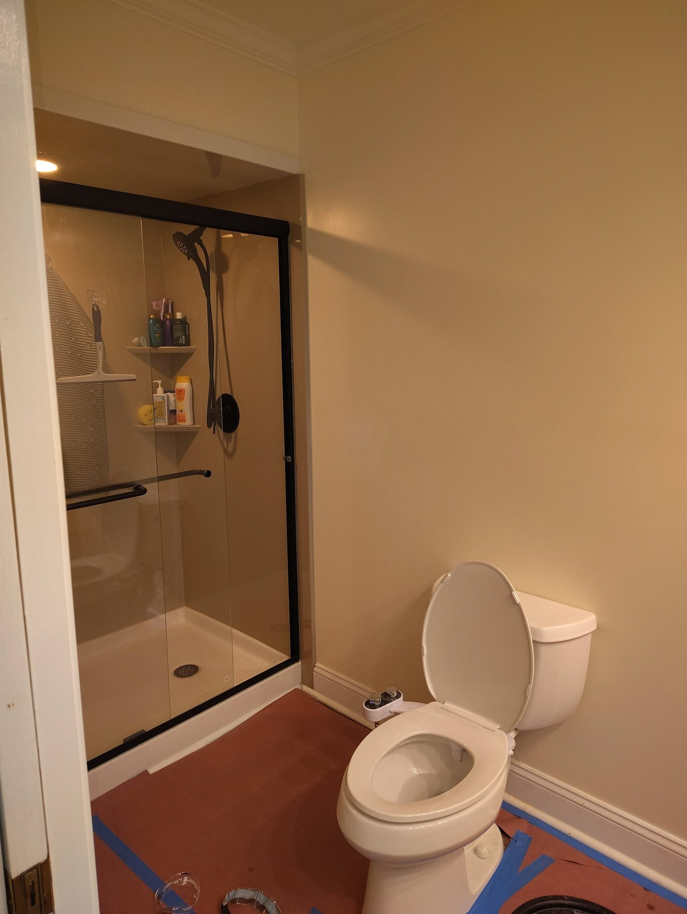
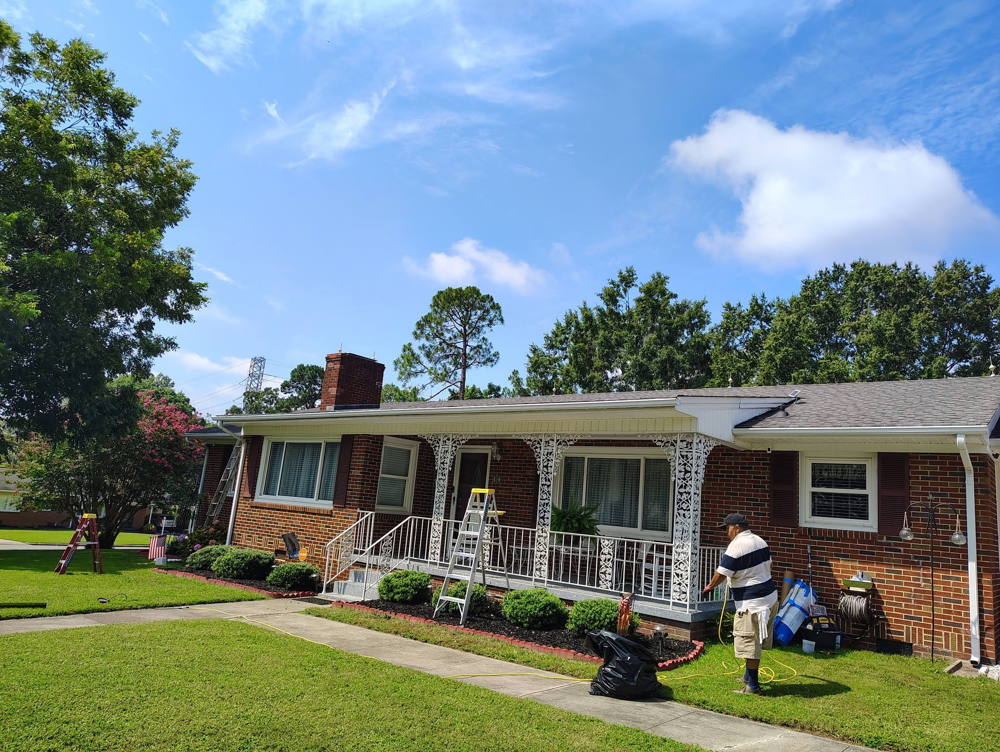
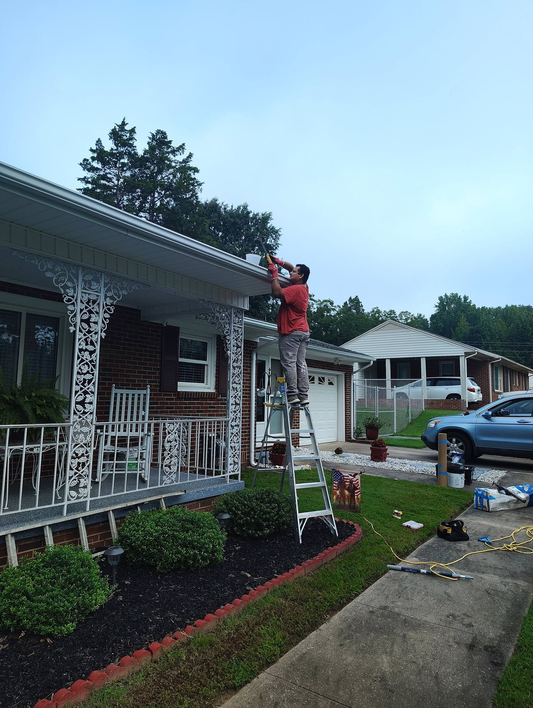
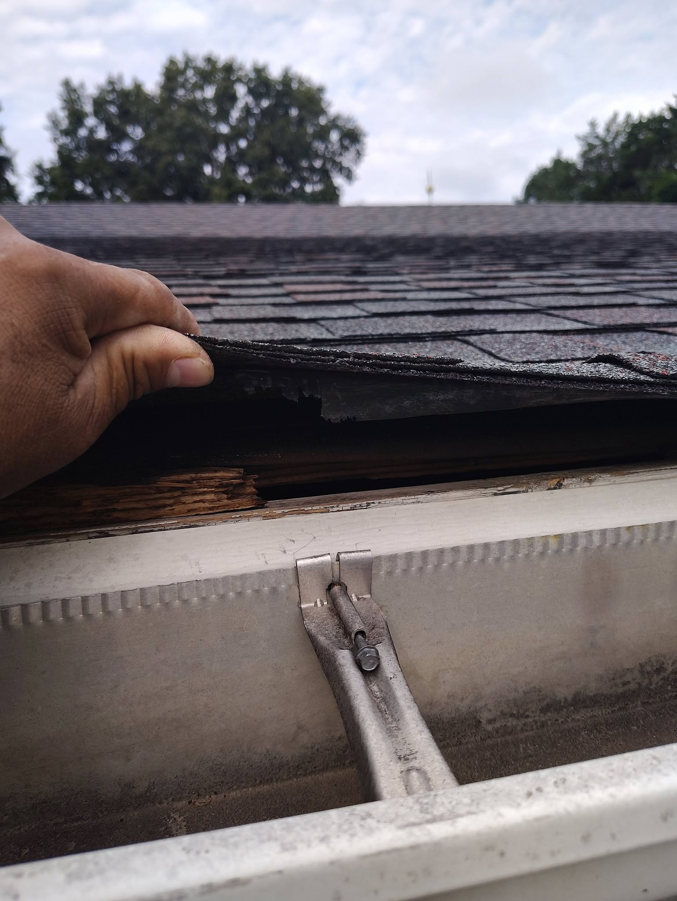
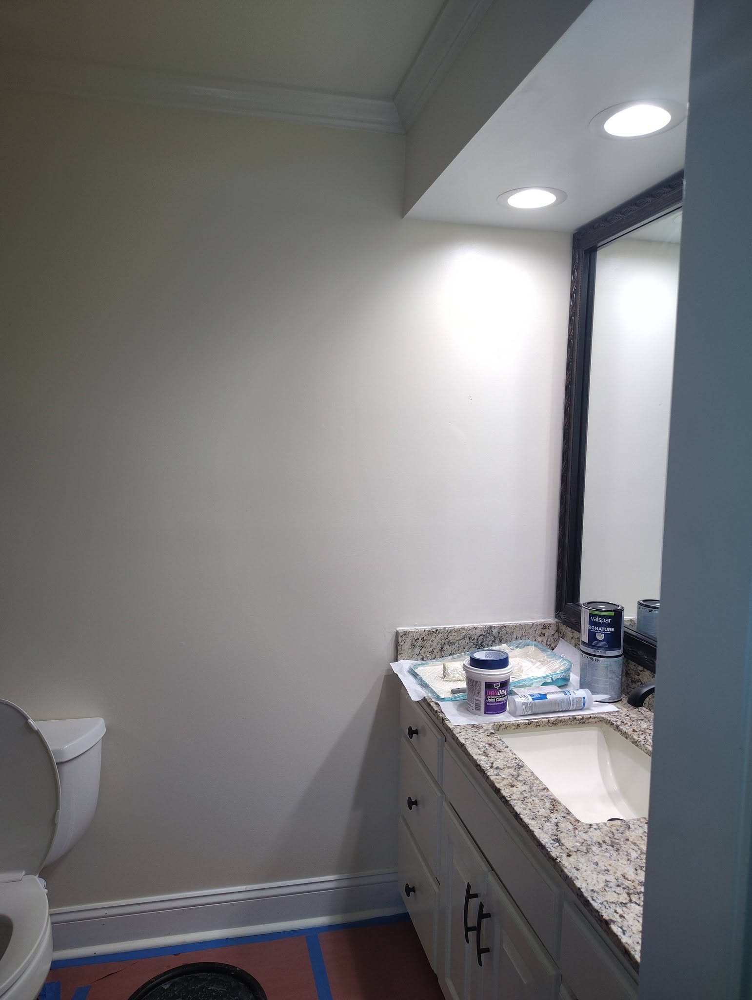
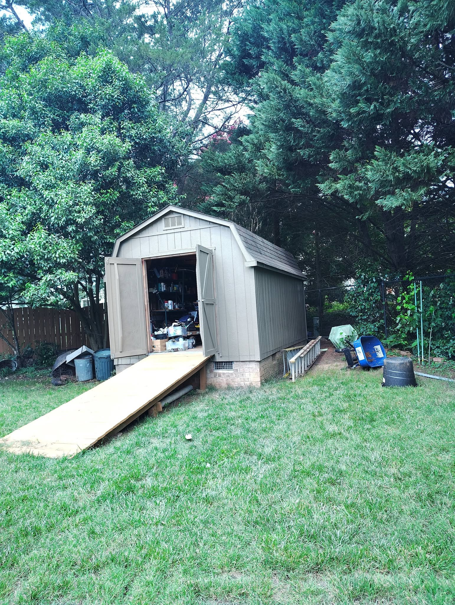
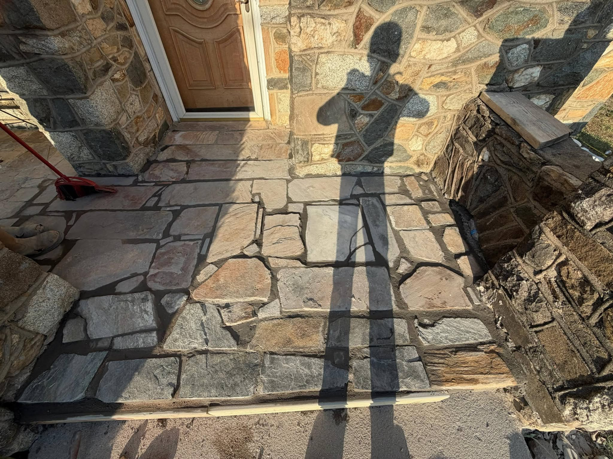
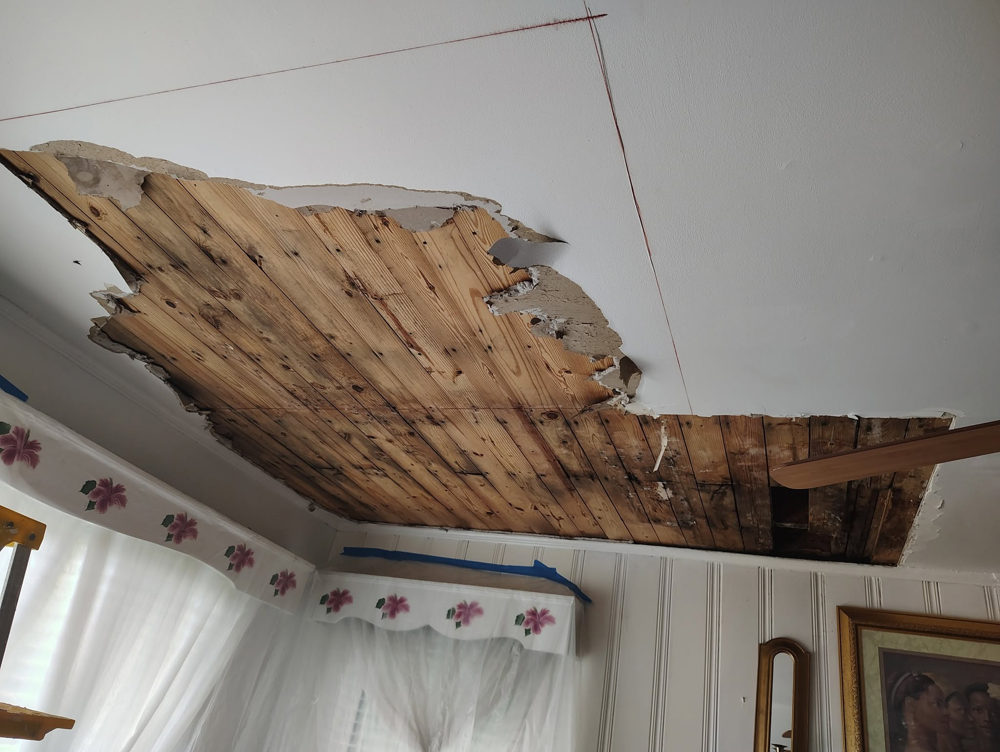
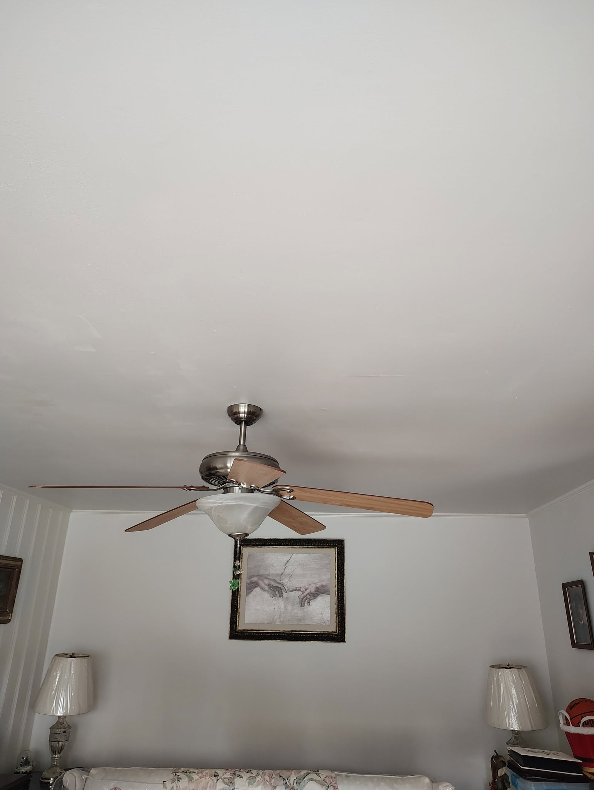

Impermeabilización
Soluciones de impermeabilización diseñadas para ayudar a proteger su propiedad contra la humedad y la filtración de agua.
Residencial y Comercial
Servicios de impermeabilización, restauración, pintura y reparación de propiedades enfocados en un trabajo confiable y resultados duraderos.
Nuestros Servicios
Servicios de impermeabilización, pintura, restauración, albañilería y reparación para propiedades residenciales y comerciales.
Soluciones de impermeabilización diseñadas para ayudar a proteger su propiedad contra la humedad y la filtración de agua.
Servicios de pintura interior y exterior para propiedades residenciales y comerciales.
Restauración de propiedades y reparación de daños causados por agua en áreas dañadas o deterioradas.
Reparación e instalación de ladrillo, piedra y albañilería para proyectos exteriores.
Techos, flashing, revestimiento, madera, concreto, terrazas y otras reparaciones exteriores.
Reparación de drywall y otros servicios de reparación y mejoramiento interior para propiedades residenciales y comerciales.

Por Qué Elegir a Flores
Flores Waterproofing Restoration & Painting LLC ofrece servicios residenciales y comerciales con preparación cuidadosa y atención a los detalles.
Lo Que Hacemos
Flores Waterproofing
Servicios para su propiedad con atención a los detalles de principio a fin.
Nuestro Trabajo
Vea algunos proyectos terminados y en progreso de Flores Waterproofing Restoration & Painting LLC.






Restauración
Un ejemplo real de un espacio interior dañado que fue reparado y restaurado.


Opiniones de Clientes
Opiniones compartidas por clientes de Flores Waterproofing Restoration & Painting LLC.
“Edwin is fantastic. He gave my client a fantastic experience with a great job done in a timely fashion at a very reasonable price.”
Daniel Miller
Google Review
“Mr. Flores is an excellent brick mason and his prices are reasonable! I appreciate the quality of his work. Mr. Flores takes pride in doing a great job.”
Catherine Berry
Google Review
“Excellent experience, very tidy to work.”
Mateo Lemus
Google Review
Áreas de Servicio
Servicios residenciales y comerciales en múltiples comunidades de Carolina del Norte.
¿No ve su área en la lista? Llame para preguntar sobre disponibilidad de servicio.
Presupuestos Gratis
Comuníquese con Flores Waterproofing Restoration & Painting LLC para hablar sobre su proyecto y solicitar un presupuesto gratis.
Solicite un Presupuesto Gratis
Llame o envíe un correo hoy para hablar sobre su proyecto.
Llamar Ahora Enviar Correo